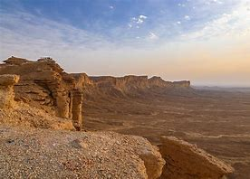

info@example.com
+012 345 6789


Saudi Arabia is one of the most inaccessible places on the planet for western travellers. A land of mystery, it is very different from anything you may have experienced before. On our Saudi Arabia holidays, we uncover some of the hidden secrets of one of travel’s last frontiers.
We start in the capital, Riyadh, a juxtaposition of bright new developments and old world charm, before heading into the desert to visit the ‘edge of the world’ with its incredible views. From here we visit old mud brick villages at Ushaiger and Hail, see the ancient rock art of Jubbah and drive via the ghost town of Al Ula to Madain Salah. The jewel of Saudi Arabia’s historic sites, Madain Saleh was built by the same civilisation as built Jordan’s Petra, and we have time to marvel at the exquisite rock carved tombs and learn about the ancient history of a people long gone from this land.
In the north west of the country, we visit the beautiful canyon of Wadi Qaraqir and the remote Bajdah desert, before flying to the striking Asir Mountains, one of the country’s most traditional areas and with landscapes unlike anywhere else in Saudi Arabia.
Unlike any other trip, this is a real journey of surprises that will challenge what you think you know about this enigmatic corner of Arabia.
Arrive in Riyadh and transfer to the hotel. Depending on when you arrive there may be time to explore the city. Overnight in Riyadh.
Spend today exploring Riyadh. We visit the Murraba Palace, built by King Abdul Aziz in the traditional style as a home for his family, as well as the historic Masmak fortress, one of the oldest buildings in the city. As well as this we will visit the Dira souq, specialising in copper and brass as well as old Bedouin jewellery, and the National Museum. Overnight in Riyadh.
Spend the morning visiting the walled town of Diriyyah, the birthplace of the Saudi state, and now in a process of restoration. In the afternoon we drive to the ‘Edge of the World’, a dramatic escarpment with spectacular views over the endless desert horizons. Return to Riyadh after watching the sunset. Overnight in Riyadh.
Please note: Diriyah is currently under restoration although is schedule to re-open shortly. If however it remains closed, we will view it from the outside.
Drive to the well preserved mud brick village of Ushaiger, with its approximately 400 houses and 25 mosques lining a maze of paths amidst the palm trees and orchards. From here continue to Buraydah and explore its lively souq and date market, as well as the camel market, reputedly the largest in the world. Overnight Tramontan Hotel or similar. (B)
This morning we drive to see the collection of ancient rock art at Jubbah, a huge open air art gallery with carvings that date back to 5500BC. Continue to Hail, the gateway to the desert and once a major meeting point for traders and pilgrims. Throughout the city are a number of forts and palaces, often now used as museums or libraries, dating back to the time of Ottoman rule. We explore city, including the Al Qishlah fort, among other sites. We will also visit the ancient petroglyphs at Jubbah. Overnight in Hail.
Drive to Al Ula, with its well preserved historic buildings. This is the gateway to Madain Saleh but is well worth exploring on its own. Upon arrival we explore the old town. Overnight in Al Ula.
Today we explore some of the many sites in and around Al Ula, including the ‘lion tomb’, Ikmah Mountain with its ancient inscriptions, and the ‘elephant rock’. Overnight in Al Ula.
Head to the site of Madain Saleh – perhaps the highlight of this trip. We spend time exploring its numerous tombs and chambers hewn into the rocks, a remnant of the Nabataean civilisation which once ruled this part of Arabia. We also head a little further afield to visit 17th century Ottoman fort at Al Moadham, and we’ll also visit the historic Hejaz railway station. Continue from here to Tabuk. Overnight in Tabuk
Drive to Wadi Qaraqir, one of Saudi Arabia’s natural wonders. This is a 15km canyon running through the Jebel Qaraqir, a palm dotted oasis with crystal clear waters, which we explore on foot and by vehicle. We then return to Tabuk for the night. Overnight in Tabuk.
Today we take jeeps into the Bajdah Desert, also known as Jebel Hisma. This is an area of stunning desert scenery not dissimilar from the better known Wadi Rum in Jordan, and we spend the day exploring its canyons, wadis and rocky outcrops, before returning to Tabuk. Overnight in Tabuk.
Fly to Abha, in the Asir Mountains. At an altitude of 2200m, the climate here is quite different to the rest of the country, and frequent rainfall makes the surrounding lands fertile, and good for agriculture. The architecture here is quite distinct, and on the outskirts of the city we can see centuries old mud and stone houses with striking white decorations. Explore the city including the market and the Al Shada Palace. Overnight in Abha.
Continue exploring the area around Abha, visiting some of its traditional villages for an insight into a more rural side of the country, with good opportunities to meet local people. Fly to Jeddah in the afternoon. Overnight in Jeddah.
Spend today exploring Jeddah. This morning visit some of the old Ottoman houses, constructed from coral and wood, for a sense of the history of this Red Sea city, built on the wealth of ancient trade routes. We also visit local museums which are home to ethnological and archaeological artefacts, and have time to stroll along the cornice with the locals. Overnight in Jeddah.
Transfer to the airport for departure.
Please note that government restrictions may sometimes force us to make amendments to this itinerary, and you should be prepared for a degree of flexibility. The Saudi authorities can be rather arbitrary in making sudden closures of sites and we cannot always guarantee that all sites can be visited. You should also be aware that some sites, like forts and mosques, can generally only be viewed from the outside.
Arrive in Bahrain and transfer to your hotel. The rest of the day is free. Overnight Golden Tulip Hotel or similar.
Spend today exploring the island of Bahrain. We head south to see the vast site of A’Ali, home to numerous burial mounds dating back 4000 years, then take a closer look at the burial chambers of Saar. We also stop at the fort at Riffa and the remains of the temple of Barbar, before returning to the capital Manama and exploring its lively souq, and the impressive Bahrain Fort, overlooking the ocean. Overnight Golden Tulip Hotel or similar. (B)
This morning visit the National Museum to give a bit more of an insight into the history and traditions of the island. We then drive to the island of Muharraq, home to a beautifully restored historic quarter which gives an idea of what much of the country would have looked like before the discovery of oil. After a visit to a nearby shipyard which builds traditional dhows, the afternoon is free to relax or explore. Overnight Golden Tulip Hotel or similar. (B)
Transfer to the airport for departure. (B)
Please note: this extension can be modified to fit your flights – for example if you are flying into Bahrain early in the morning of Day 1, excursions can start on that day rather than waiting until Day 2. Similarly, you could fly out in the afternoon / evening of Day 3 rather than have a third night in Bahrain.
Arrive in Doha and transfer to your hotel. Overnight Best Western Hotel or similar. (B)
After breakfast we explore the city. The contrast between history and modernity, old and new is very apparent in this fast growing metropolis. We visit the National Museum of Qatar, as well as Doha’s historical quarter at the Souq Waqif Heritage Market with its extensive wares including an array of spices and herbs, textiles and art. We then head to Doha’s modern landmarks, from the Corniche at the waterfront to the West Bay District with its towering skyscrapers including Doha Tower and the government buildings, as well as the cultural village of Katara with its mosques, amphitheatre and sculptures. Overnight Best Western Hotel or similar. (B)
After breakfast we head south, venturing into the desert to drive through the dunes to the inland sea of Khor al Adaid, close to the border with Saudi Arabia. Return to Doha and the afternoon is free. Overnight Best Western Hotel or similar. (B)
Transfer to the airport for your onward flight. (B)
Important Note :
The itinerary is tentative and subjected to change without prior notice. Final Itinerary will be handed over on the day of arrival.
We accept all methods of secure payment: Visa, MasterCard, PayPal, direct bank transfer.
Kindly note that the hotel rating in Saudi is not the same as in USA or Europe, so Luxury or Ultimate Luxury hotel options are always recommended.
Accommodation Plan (A) 5 stars:
Riyadh: (Shaza Riyadh // Rosh Rayhaan by Rotana // Four Points By Sheraton Riyadh Khaldia)
Jeddah: (Prime Hotel – Jeddah, Al Hamra // Radisson Blu Hotel, Jeddah Al Salam // Sheraton Jeddah Hotel // Mövenpick Hotel Tahlia Jeddah )
| 3 Star | 4 Star | 5 Star | |
|---|---|---|---|
| Price per person in DBL or TRPL Room | 6300$ | 6825$ | 8325$ |
| Solo traveler | 10080$ | 10900$ | 13320$ |
| Christmas & Easter – DBL or TRPL Room | 7560$ | 8190$ | 9990$ |
| Christmas & Easter – Solo traveler | 12100$ | 13100$ | 15985$ |
Accommodation Plan (B) Luxury:
Riyadh: (Hyatt Regency Riyadh Olaya // Hilton Riyadh Hotel & Residences)
Jeddah: (Jeddah Hilton // Elaf Jeddah Hotel – Red Sea Mall )
| All year Round | Christmas & Easter | |
|---|---|---|
| price per person in dbl room | 11325$ | 13590$ |
| Solo traveler | 18120$ | 21745$ |
Accommodation Plan (C) Ultimate Luxury:
Riyadh: (Al Faisaliah Hotel // Burj Rafal Hotel Riyadh // Marriott Riyadh Diplomatic Quarter // Narcissus Hotel and SPA Riyadh )
Jeddah: (Park Hyatt Jeddah – Marina, Club and Spa // Rosewood Jeddah )
| All year Round | Christmas & Easter | |
|---|---|---|
| price per person in dbl room | 1285$ | 15390$ |
| Solo traveler | 20520$ | 24625$ |
Secure your trip and give yourself greater peace of mind with the Travel Insurance program proposed by AIG for you. For more info visit www.aig.com One week 50$ per person More than one week 75 $ per person.
If you plan to get a Saudi sim card we would advise you to get it at the airport when you arrive. as it will be much easier to buy it from the airport other than anywhere else as they request more documents if you decide to buy it later from anywhere else.
We don’t only choose qualified and professional Tour leader/ Drivers but also choose those who are friendly, with a sense of humor who are committed to offering a superior level of service so you can enjoy your time with them.
Both men and women are asked to dress modestly in public, avoiding tight-fitting clothing. Women should cover shoulders and knees in public.
You should keep your passport with you during any tour you will be making in Saudi Arabia. don’t leave it in your hotel room as some times they request to see your passport or visa.


© roamarabia.com. All Rights Reserved.
Designed by MAQ Solution